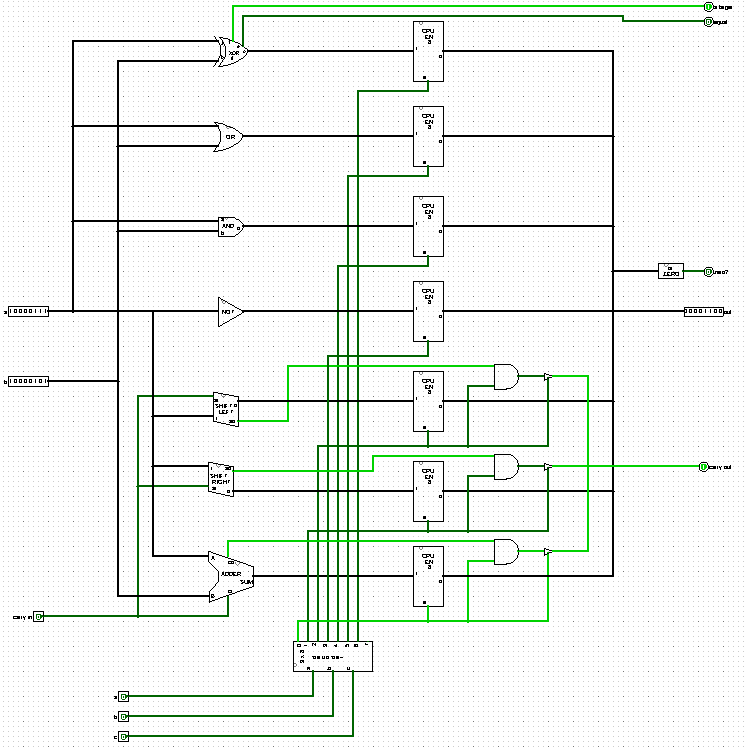
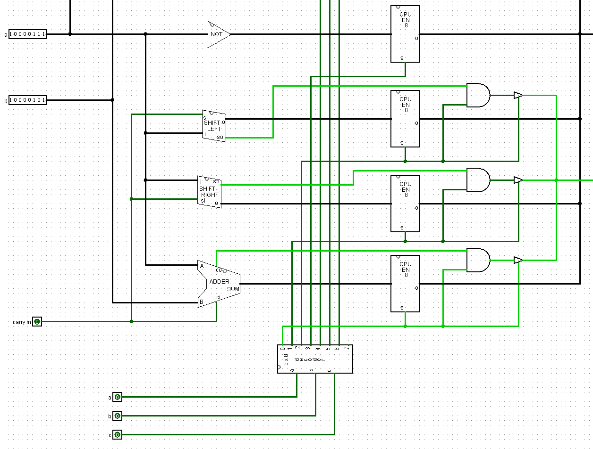
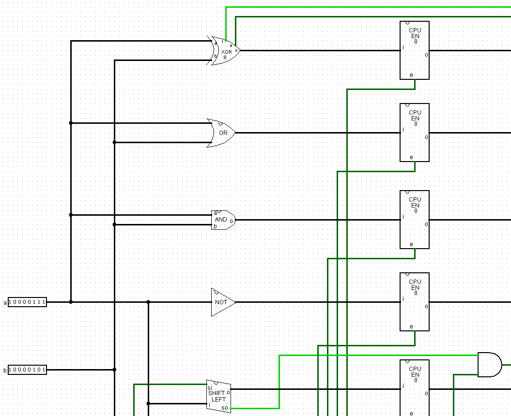
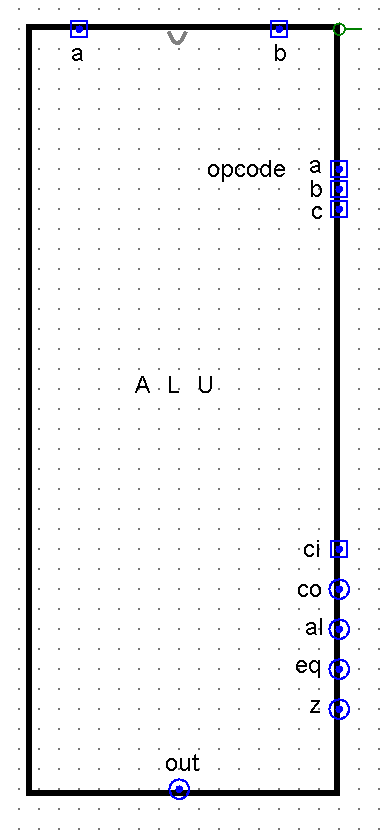

Assembling the ALU
Sections 7.1 – 7.3 | Estimated time: ~0.8 hours reading, ~1.2 hours building
7.1 Seven answers and no way to ask for one
On the hardware side: you have seven operation legs, a comparator and a zero function. All of them compute, all the time, correctly. And there is no mechanism to pick one. You have been selecting by hand all week — looking at whichever leg you wanted.
On the software side: your program runs straight down the page. Every instruction executes, in order, exactly once. It cannot skip an instruction, cannot go back to one, and cannot call a procedure and return. It has no if, no while and no functions.
Those look like two unrelated gaps. They are the same gap. Nothing chooses.
By the end of this week: a 3-bit opcode selects one of seven answers out of your ALU, and your programs branch, loop, call and return. Both are solved by the same idea arriving in two different places, which is the clearest argument this course has for why the two tracks run side by side instead of one after the other.
7.2 Everything you need is already in your file
Open the .circ file you have been adding to since Week 2 and look at the tab list. Here is everything this checkpoint needs:
| Component | How many | You built it in |
|---|---|---|
DECODER_3TO8 | 1 | Week 3 |
ENABLE_8BIT | 7 | Week 5 |
ADDER_8BIT | 1 | Week 3 |
SHIFT_RIGHT, SHIFT_LEFT | 1 each | Week 6 |
NOT_8BIT, AND_8BIT, OR_8BIT | 1 each | Week 6 |
XOR_CMP_8BIT, IS_ZERO | 1 each | Week 6 |
Checkpoint 2b is one new tab, and everything inside it is either an instance of a circuit you already own or ordinary wiring. You will not build a decoder — you built three of them in Week 3, and one of them is exactly the size this needs. You will not build an output stage — ENABLE_8BIT was Checkpoint 1, and you need seven copies of it.
This is what Standards §4's circuits are components, not disposable exercises has been arranging since Week 3. It is the third week running that you open your file and find the hard part already sitting there, and it is the most complete version of that payoff the course will produce.
It also means this checkpoint is about an hour of work. Do not budget the week by habit — the hardware is short and the software is long, which is the reverse of every week since Week 3.
The flip side of instantiating everything: a circuit with a quiet fault in it is about to be wired into something with nine pins and seven parallel paths, where finding it is much harder. If your Week 6 comparator was never quite right, this is the last comfortable moment to deal with it.
7.3 Assembling ALU_8BIT
Create one new tab, ALU_8BIT. This is the interface the rest of the course will wire into, so the pin names matter exactly:
| Pin | Width | Direction | Meaning |
|---|---|---|---|
A | 8 | in | first operand |
B | 8 | in | second operand |
opcode | 3 | in | which operation — A is the top bit, B the middle, C the bottom |
CI | 1 | in | carry in / shift in. Set this pin's pull behaviour to pull-down |
C | 8 | out | the result |
CO | 1 | out | carry out / shift out |
AL | 1 | out | A is greater than B — always live |
EQ | 1 | out | A equals B — always live |
Z | 1 | out | the result is all zeros |

The wiring, in five steps
-
A,BandCIfan out to every leg.Not to the selected one — to all of them. This is the claim from Week 6 becoming visible in your own circuit: all seven operations run continuously. Splitters and tunnels will keep this readable; a tunnel named
Asaves eight wires crossing the canvas. -
opcodeinto yourDECODER_3TO8.Output 0 to the adder's enable, 1 to shift right, 2 to shift left, 3 to NOT, 4 to AND, 5 to OR, 6 to XOR. Output 7 connects to nothing. Leave it visibly unconnected rather than tidying it away — it is the honest answer to what an undefined opcode does, and you will be asked about it.
-
One
ENABLE_8BITon each leg's output.Its
epin comes from that leg's decoder line. Six of the seven are switched off at any moment, and a switched-off enable block asserts00000000. -
OR the seven 8-bit outputs together into
C.Six zeros and one answer. OR them and you get the answer. Bit by bit: seven OR gates, or a tree of them.
-
CO, then the flags.Three legs produce a carry-or-shift-out bit: the adder, shift right and shift left. AND each one with its own decoder line, then OR the three results into
CO— so only the selected leg's bit gets through.ALandEQcome straight from the comparator leg, andZfromIS_ZEROwatchingC.


You are about to connect seven 8-bit outputs to the same place. Page 1 of last week said that is not a bus, and here is what that means in the wiring in front of you.
Six enable blocks are asserting 00000000 and one is asserting an answer. No device has to let go of anything, because no device is contending. Zero is the identity for OR, so six zeros and one value OR to that value.
If you find yourself reaching for a controlled buffer on these seven paths — stop. The buffers you need are already inside ENABLE_8BIT, where Week 5 put them. Adding more on the outside is how this circuit gets subtly wrong, and the wrongness will not show up until Week 10, when you wire a real bus and carry the wrong model into it.
Verify all eight opcodes before you submit
Set A = 11001010, B = 10110110, CI = 0, and step the opcode through all eight values. Screenshot each.
| opcode | operation | C | CO | AL | EQ | Z |
|---|---|---|---|---|---|---|
000 | ADD | 10000000 | 1 | 1 | 0 | 0 |
001 | SHIFT RIGHT | 01100101 | 0 | 1 | 0 | 0 |
010 | SHIFT LEFT | 10010100 | 1 | 1 | 0 | 0 |
011 | NOT | 00110101 | 0 | 1 | 0 | 0 |
100 | AND | 10000010 | 0 | 1 | 0 | 0 |
101 | OR | 11111110 | 0 | 1 | 0 | 0 |
110 | XOR | 01111100 | 0 | 1 | 0 | 0 |
111 | unassigned | nothing driving | 0 | 1 | 0 | — |
AL columnIt is 1 in every row, including 111. The comparator does not care which opcode is selected — it is wired straight to the output pin, not through an enable block, and it computes continuously.
If your AL changes as you step the opcode, you have put the comparator behind an enable block and it needs to come out. That is the single most likely wiring error in this checkpoint, and it is invisible until Week 7's branch instructions need a flag that is live at the moment they ask.

Where you are
The ALU is finished. Every arithmetic and logical operation your CPU will ever perform now lives in one component with nine pins, and nothing about it changes between here and Week 17 — it gets wired to other things, but it does not get rebuilt.
The rest of this week is the other track, and it is the longer half.